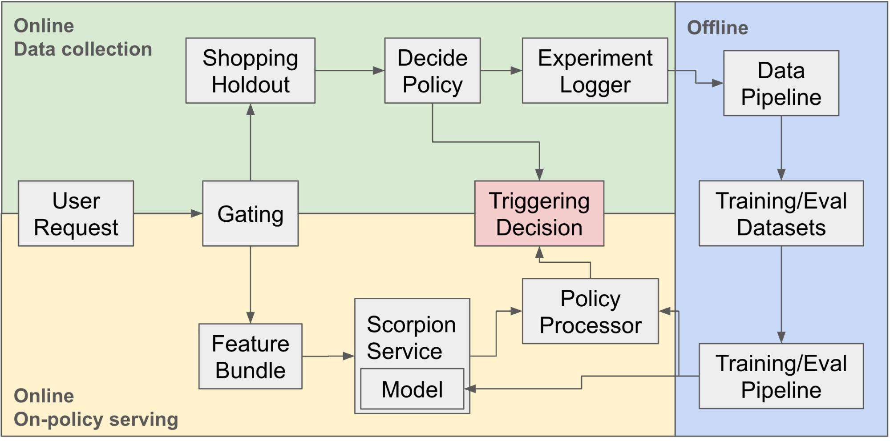
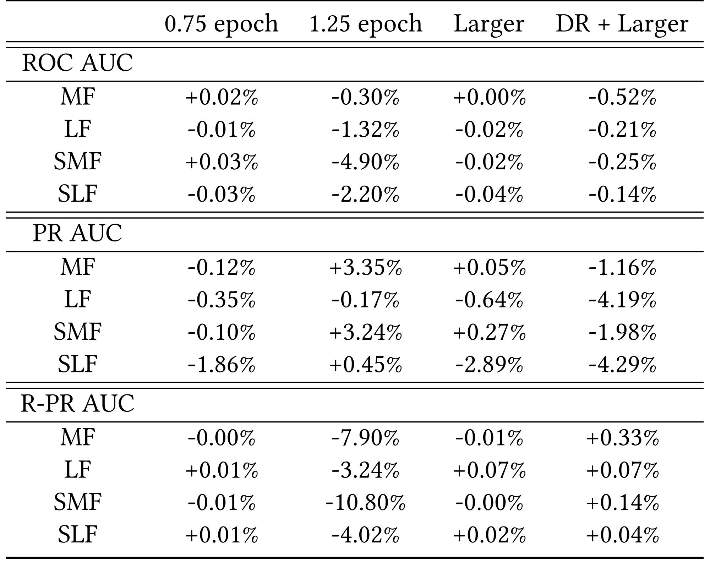
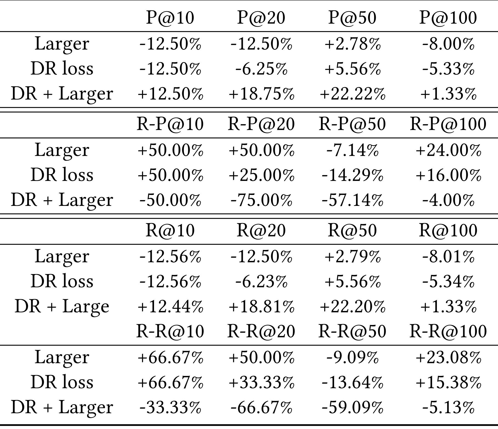
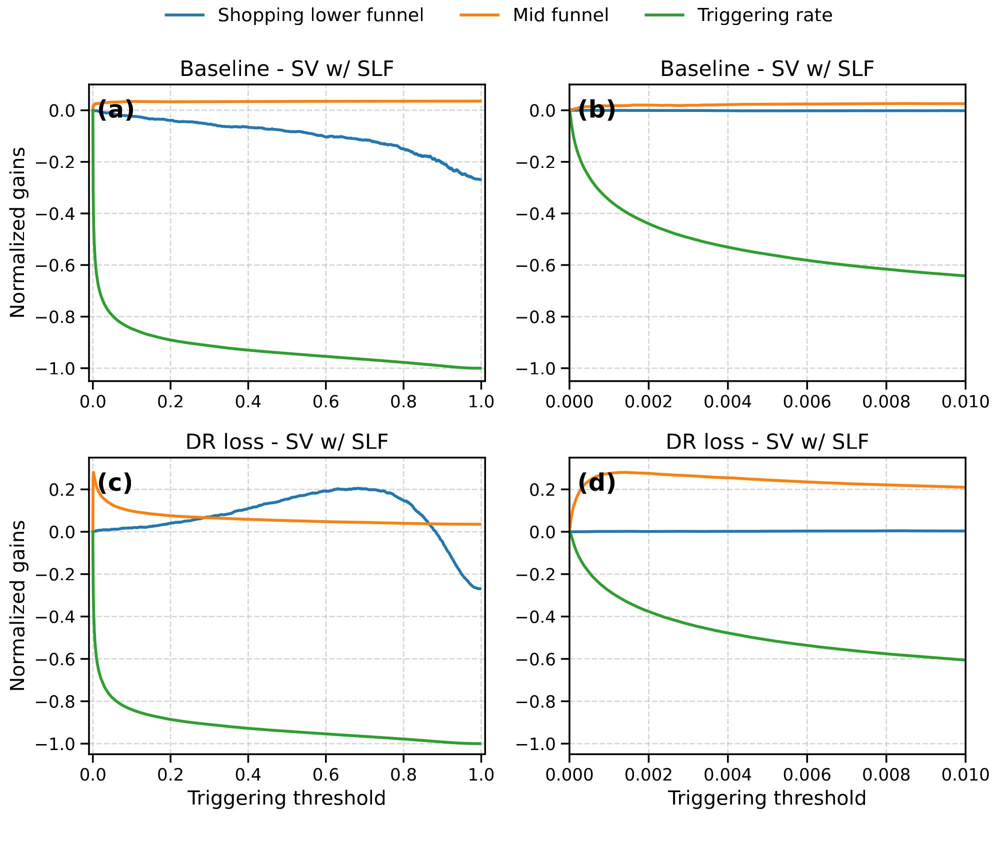
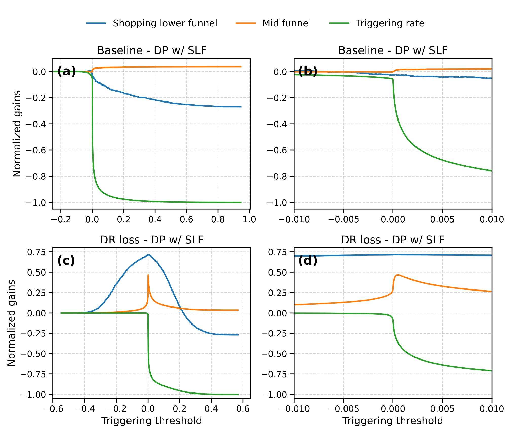
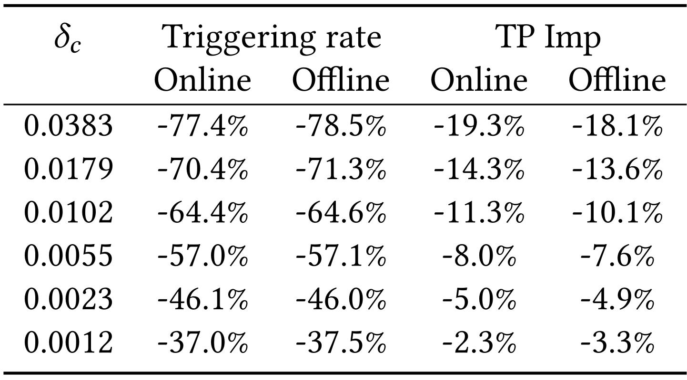
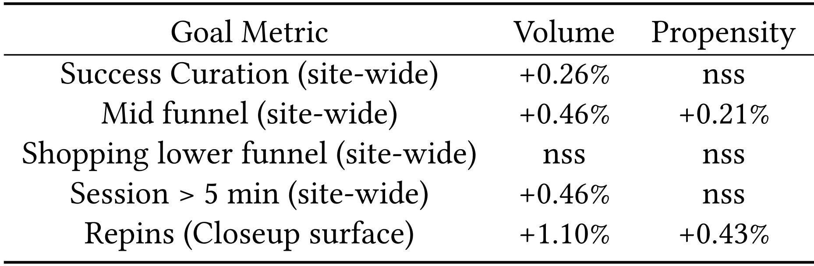
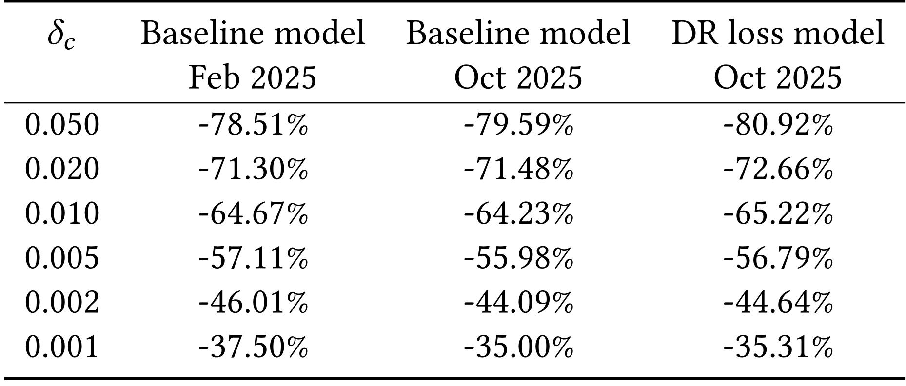

Pinterest Causal Retrieval：用随机化日志、双重稳健学习与离线回放控制电商召回触发
论文英文题目为 Deep-learning Causal Retrieval Optimization for Efficient e-commerce Distribution in Pinterest，中文可译为“面向 Pinterest 高效电商分发的深度因果召回优化”。作者包括 Junpeng Hou、XianXing Zhang、Sai Xiao、Derek Cheng、Darren Reger、Olafur Gudmundsson、Mehdi Ben Ayed、Zhiqing Rao、Huizhong Duan；工作主体来自 Pinterest，论文脚注说明 XianXing Zhang 的相关工作也完成于 Pinterest。论文于 2026 年 7 月 14 日提交 arXiv，进入 KDD 2026，唯一论文入口为 arXiv:2607.14161。截至本次核验，未发现可确认的公开代码仓库或模型发布页。
对每个可进入购物推荐的请求都触发全部 Shopping Candidate Generators，会浪费早期召回资源，也可能把商业内容推给没有购物意图的用户；但只预测“谁会发生购物行为”仍然是相关性判断，不能回答“触发购物召回是否真的带来了增量价值”。
1. 背景和问题
1.1 决策发生在排序之前，代价却贯穿整条链路
Pinterest 的 Closeup 场景会在用户点开一个 Pin 后继续推荐相关内容，其中购物候选生成器承担商品化内容的早期召回。这个位置处在漏斗最上游：一旦决定触发，后面还要支付远程召回、特征处理、排序、混排等成本；如果不触发，后续阶段就看不到这部分购物候选。传统“所有合格请求全部触发”的做法简单，却把请求间巨大的购物意图差异忽略了。论文给出的日志统计很直观：触发购物召回对 Shopping repin、Shopping long-click 等购物行为有约 30% 的相对提升，但总体 repin 反而下降约 2%。这不是一个只追求购物点击率就能解决的问题，而是“购物增量、全站体验和基础设施成本”三者之间的前置资源分配。
早期召回的另一个难点是，动作效果不能只在触发流量里看。假设某个重度购物用户即使不触发专门的 Shopping CG，也会通过其他候选源看到商品并完成互动，那么“触发后发生了购物行为”并不等价于“这个行为由触发带来”。反过来，一个平时购物行为不强、但在特定 Pin 与入口下会被购物候选有效激发的用户，可能在相关性模型里分数不高，却具有真实增量。因而模型要估计的不是单纯的结果概率，而是同一请求在触发与不触发两种潜在动作下的结果差。
1.2 为什么普通 CTR/转化预测不够
相关性模型通常学习 \(p(m=1\mid r)\) 或只在触发样本上学习 \(p(m=1\mid y=1,r)\)：给定请求特征 \(r\)，结果 \(m\) 是否会发生。它擅长找“本来就可能发生行为的人”，但无法分离用户固有意图与动作造成的增量。若历史策略本来就倾向于对购物重度用户触发，观察日志还会产生选择偏差；模型学到的可能只是旧策略，而不是反事实。
这篇论文的关键变化，是把是否触发 Shopping CG 明确写成二元处理 \(y\)，把购物漏斗、总体会话、Pin 保存等写成多个结果 \(m_h\)，再用随机化流量提供两种动作的重叠覆盖。这样，模型不仅学习触发后的结果，也学习不触发时的结果，并用双重稳健伪结果监督 uplift。它随后把模型学习与业务阈值选择拆开：模型提供结果或增量分数，离线回放产生阈值—成本—效果曲线，产品和基础设施团队再选择上线点。这种解耦牺牲了“端到端自动决定一切”的形式，却换来可审计、可调参、无需每次改变业务权衡都重训模型的生产能力。
1.3 论文真正解决到哪一层
论文并不是提出一个新的通用排序器，也没有尝试把召回数量、候选质量和最终长期价值一次性端到端求解。它聚焦一个清晰的二元控制：对当前请求，是否调用一组购物候选生成器。结果变量可以有多个，但最终线上主策略主要使用 Shopping Lower Funnel（SLF）结果头；因果 uplift 的 Delta Policy（DP）更多承担诊断作用，生产上为了离线—线上一致性采用方差更低的 Single-Value Policy（SV）。因此，标题里的“causal retrieval optimization”应理解为因果信息参与了触发器的训练与评估，而不是线上一定直接按 uplift 排序。
论文的贡献由四部分构成。第一，构建 50/50 随机 Shopping Holdout，为触发与不触发提供可比较日志。第二，用多任务网络同时预测两个潜在结果、处理倾向和增量，并引入 doubly robust 伪结果。第三，设计基于随机日志的线性复杂度离线回放，把阈值变成可检查的策略曲线。第四，把模型部署到 Pinterest 线上推理服务，与其他远程调用并行执行，并报告触发削减与全站指标。这一组合的价值在于把因果估计、推荐模型和生产策略闭环放到同一个系统里，而不是只在离线数据上展示 uplift 指标。
从推荐系统研究视角看，这个问题还揭示了 early retrieval 与常规 ranking 的评估错位。排序模型在固定候选集上比较 NDCG、AUC 或转化，通常不必回答“候选源是否应被调用”；触发器却会先改变候选集、系统负载和可观测反馈，动作本身改变后续训练数据。只看购物指标可能鼓励过度触发，只看总体互动又可能把有真实商业增量的小群体抹平，只看调用量则会把最便宜的“不触发”误当最优。因此论文同时保留购物漏斗、总体会话、保存行为、反向精度与资源触发率，让每个阈值都成为一组多目标结果，而不是单一分数。这也解释了为什么作者没有把成本直接塞进一个不可审计的复合损失：不同团队对商业价值、体验保护和基础设施预算的权重会变化，显式策略曲线更适合生产协商。
2. 方法
2.1 两种触发策略：直接预测结果，还是预测增量
对一个请求，论文写作 \(r=(r_u,r_c,r_q)\)：\(r_u\) 是用户侧信息，\(r_c\) 是入口、设备、时间等上下文，\(r_q\) 是当前 query Pin 的视觉、文本和稀疏特征。处理 \(y=1\) 表示触发 Shopping CG，\(y=0\) 表示不触发；\(m\) 是某个二元结果。真正的因果目标是：
符号解释：\(\Delta_m(r)\) 表示对同一请求执行“触发”相对于“不触发”带来的条件增量；两项分别对应两个潜在动作下的结果概率。Delta Policy 在 \(\Delta_m(r)>\delta_c(r)\) 时触发，论文实验把 \(\delta_c(r)\) 简化为可调常数。阈值越高，系统越保守；阈值不是纯模型超参，而是业务价值与调用成本的交换率。
DP 的问题是方差：它要将两个独立估计的结果相减，任一侧误差都会进入 uplift，覆盖稀疏区域时符号甚至可能翻转。论文因此同时研究 SV，只使用 \(p(m=1\mid y=1,r)\) 与阈值比较。SV 不直接声称识别个体因果效应，却通常更稳定；当离线回放必须准确预估线上触发率时，论文把 SV 作为主要生产策略，把 DP 当作检查 uplift 头是否学到合理增量结构的因果诊断。这里最重要的生产判断不是“因果分数一定优于结果分数”，而是因果训练改善表示与边界，最终动作可以选择更低方差的打分头。
2.2 随机化日志与多任务结果头
Pinterest 从购物合格流量中划出一个小比例 Shopping Holdout，以 0.5/0.5 概率随机分配触发与不触发。日志同时记录分配、请求特征和后续结果。随机化的直接好处是 propensity 已知且两侧有 overlap，避免主实验依赖从旧策略估计敏感倾向。由于购物流量只占整体一部分，论文还按国家、用户与 Pin 兴趣等更高电商活跃区间采样，使购物曝光与互动在训练数据中的占比从约 1% 提升到约 10%；这改善稀疏性，但也意味着训练分布并非全站自然分布，外推必须依赖线上实验。最简单的 SV 基线对单个结果使用加权 BCE：
符号解释：\(N\) 是样本数，\(m_i\) 是观测结果，\(\mu_i\) 是预测概率，\(\omega_i\) 是样本权重。这个目标能学习触发侧的结果排序，却没有反事实结构。因果模型为每个结果同时输出 \(\mu_i^{(0)}\)、\(\mu_i^{(1)}\)、propensity \(e_i=p(y_i=1\mid r_i)\) 和 uplift \(\tau_i\)。两个结果头只在对应的观测处理臂上计算损失：
符号解释：\(\mathbf 1_i^{(y)}\) 表示样本 \(i\) 实际被分到处理臂 \(y\)，所以未观测的反事实结果不会被当作真标签；\(\omega_i^{(y)}\) 用于类别与业务权重。这个掩码保证每条随机日志只监督真实可见的一侧，而另一侧要靠共享表示与 DR 残差间接约束。propensity 头则使用标准二元交叉熵：
符号解释：\(e_i\) 是模型估计的触发概率。主随机实验里真实 propensity 恒为 0.5，理论上可以跳过该损失并直接使用常数；作者仍保留头部，以适应未来日志不平衡、系统故障或更一般的观察数据。这个设计很务实，但不能反过来把“保留 propensity 头”理解为已经解决非随机日志中的全部混杂。
2.3 双重稳健伪结果：把观测残差送进 uplift
模型先用一个一致性项约束 uplift 头不要偏离两个结果头之差：
符号解释：\(\tau_i\) 是显式 uplift 预测，\(\mu_i^{(1)}-\mu_i^{(0)}\) 是两潜在结果头的隐式差。该项让多个头在稀疏区域共享统计强度，但若两个结果头都偏，它也会把偏差传给 uplift。因此论文再引入 DR 伪结果：
符号解释：\(r_{y,i}\) 是观测结果相对对应结果头的残差；处理样本用 \(e_i\) 校正，控制样本用 \(1-e_i\) 校正。第一项提供平滑的模型差，后两项用真实观测残差纠偏。当结果模型或 propensity 模型至少一块正确指定时，伪结果仍可保持单侧稳健性；在 50/50 随机流量中，分母远离 0，也显著减轻逆倾向权重爆炸。
uplift 头对伪结果做均方误差：
符号解释：\(\omega_i^{\mathrm{DR}}\) 控制哪些 DR 样本参与优化。论文采用 Switch-DR 风格截断：
符号解释：指示函数只保留修正项不超过阈值的记录；作者还会裁剪 propensity 预测以防损失发散。这里应忠实注意原文公式是单边条件，并未写绝对值。较小的 \(\lambda_{\mathrm{SW}}\) 换来梯度稳定，但也会丢弃部分大残差信号；论文称在结果头合理时不会引入很大偏差，却没有给出不同截断值的系统消融。
总损失为：
符号解释：四个 \(\lambda\) 分别控制结果、倾向、一致性和 DR 监督，实验默认都取 1。作者称继续调这些权重没有带来实质离线改进，因为受控 holdout 下结果损失自然占主导；这也使默认设置比复杂的逐任务搜索更容易维护。论文扩展到 \(H\) 个业务结果时，对每个结果头施加事件权重：
符号解释：\(m_h\) 是第 \(h\) 个结果，\(\omega^h\) 是结果级权重，propensity 由所有任务共享。论文使用十个事件、一个负事件和一个细化 SLF 指标；普通头权重为 1，Long-click 与 Lower-funnel 等稀疏头提高到 10。底层特征经独立 embedding lookup、分组与拼接后进入 DCNv2 做交叉，再用 12-expert MMoE 共享多任务信息。多任务的意义不是“头越多越好”，而是让密集互动为稀疏商业结果提供共享表示，同时用权重保住关键稀疏事件。
2.4 离线回放如何接上线上服务
离线评估表来自随机 holdout，每条记录包含处理分配、观测业务指标以及 SV/DP 分数。对任一候选阈值，策略先给出“应触发/不触发”；只有当策略动作与日志中的随机分配一致时，这条记录才进入该阈值的结果汇总。这相当于在两个极端随机策略之间做 policy-space interpolation，成立依赖随机化、处理臂重叠、未来流量与 holdout 足够相似，以及回放单元间没有严重干扰。论文的 Algorithm 1 先按分数排序，再用游标扫描阈值，增减命中记录的指标与请求数，复杂度为 \(O(n_e)\)，避免每个阈值重新全表过滤。

Figure 1 把系统分成三块。左上绿色区域是随机数据采集：通过 Gating 进入 Shopping Holdout 后，Decide Policy 随机分配动作，Experiment Logger 记录触发决定和后续行为。右侧蓝色区域把日志送入 Data Pipeline，形成训练/评估集，再由 Training/Eval Pipeline 产出模型。左下黄色区域是线上 on-policy serving：请求特征经 Feature Bundle 输入 Scorpion 推理服务，分数交给 Policy Processor，与当前业务阈值组合后生成 Triggering Decision。模型调用与其他远程召回调用并行，因此作者报告没有观察到端到端服务延迟的实质性增加。图中最值得注意的是“模型训练”和“最终阈值”没有绑死：同一模型可以在不重训的情况下调整触发预算，但随机 holdout 必须持续存在，才能监控策略漂移并刷新反事实证据。
3. 实验结果
3.1 场景、数据、模型与指标
实验位于 Pinterest Closeup surface。训练使用 14 天日志，评估使用 1 天；从训练数据随机抽 500 万条计算特征统计并初始化 embedding/归一化。基线约 1.7 亿可训练参数，包含三层 DCNv2 和 12 个 MMoE experts，每个 expert 隐层为 \([256,64,32]\)。更大模型约为基线参数量的 5 倍。训练在一台 AWS p4d.24xlarge、8 张 NVIDIA A100 上进行，batch size 8192，FuseAdam 学习率 0.001。论文发现推荐模型常见的单 epoch 后过拟合仍然存在：0.75 epoch 往往优于 1.25 epoch；简单扩大参数量也不自然提高 AUC。
指标分三层。第一层是每个结果头的 ROC AUC、PR AUC 与反向 R-PR AUC；反向指标把标签翻转，用于检查模型能否识别“不应分发购物内容”的请求。第二层是靠近生产阈值的 P@K、R@K 及反向版本，更贴近“只对最高置信区域触发或抑制”的实际决策。第三层是离线回放和线上实验中的触发率、True Positive impressions、总体与购物会话、Pin 保存等业务量。作者没有只用一个 AUC 宣称胜出，这是本论文实验设计较强的地方。
3.2 AUC 饱和后，要看阈值附近的标准与反向指标

Table 2 以基线为参照比较 0.75/1.25 epoch、更大模型和 DR+更大模型。结果并不呈现“DR 在所有 AUC 上都更高”：例如 DR+Larger 的 SLF ROC AUC 为 -0.14%，PR AUC 为 -4.29%，而 R-PR AUC仅 +0.04%。作者解释基线的 MF 已有约 0.97 ROC AUC、0.35 PR AUC 和 0.95 R-PR AUC，整体分布指标接近饱和，对局部阈值变化不敏感。表格因此主要证明一件事：单看全局 AUC 无法选择触发模型，也不能用参数量扩大替代因果目标。更严格地说，它并没有直接证明 DR 一定改善所有结果预测；真正的正向证据要到 Table 3 的决策区间指标和后续回放曲线里找。 表中 1.25 epoch 的多项明显退化还与作者所说的单 epoch 后过拟合一致，提醒训练轮次本身比“更久训练”更值得被独立验证。

Table 3 把视角缩到 SLF 的高精度阈值区。DR+Larger 在 P@10、P@20、P@50、P@100 上相对基线分别为 +12.50%、+18.75%、+22.22%、+1.33%，R@K 变化几乎同幅；相比之下，只扩大模型在多数 K 上为负。反向 P@K/R@K 的下降表示模型较少把购物内容推给本应判为负的请求，DR+Larger 在 R-P@20 为 -75%、R-R@20 为 -66.67%。这些数字的绝对增幅很大，但 K 很小，容易受样本与阈值选取影响，论文没有给出置信区间。可靠结论应限定为：在作者选择的 SLF 决策区间里，额外容量只有与 DR 目标结合时才同时改善有购物增量的识别与错误触发抑制；不能据此断言所有头、所有阈值都更好。
3.3 SV 与 DP 回放揭示不同的方差—可解释性取舍

Figure 2 的横轴是 SV 触发阈值，纵轴是相对 \(\delta_c=0\) 归一化后的指标变化；蓝、橙、绿分别表示 Shopping lower funnel、Mid funnel 与触发率。基线的触发率随阈值快速下降，SLF 较平缓下降，说明模型能用少量购物会话损失换取大量召回调用削减。DR-loss 模型的曲线更有意思：小幅提高阈值时，触发率迅速下降，Mid funnel 先明显改善，SLF 在一段区间保持甚至上升，说明训练目标把“对购物真正有增量的请求”和“购物分发会挤压总体互动的请求”分得更开；阈值过高后 SLF 仍会下降，策略并不存在无成本削减。右侧放大图展示的正是上线会选择的狭窄阈值区，而不是整段曲线的平均表现。

Figure 3 改用 \(\Delta_m\) 作为分数，因而因果边界自然落在 0 附近。基线越过 0 后触发率陡降，Mid funnel 小幅跳变，SLF近似线性下降；DR 模型在 0 附近形成更尖锐的结构：Mid funnel 出现不对称峰值，SLF 在窄区间形成平台。这支持 uplift 头确实学到与处理增量有关的排序，而不是简单复制结果头。不过尖峰也暴露 DP 的生产风险：两个结果估计相减后，边界附近一点噪声就会导致动作大幅变化，作者明确说 DP 的离线—线上一致性通常较低。因而图的最佳读法不是“DP 比 SV 更强”，而是“DP 提供因果诊断，SV 提供稳定控制”；未来若要直接部署 DP，需要 ensemble、边界不确定性过滤或在稀疏区域增加针对性探索。
3.4 离线回放在哪些指标上可信

Table 4 是论文最关键的校准证据。阈值从 0.0012 提高到 0.0383 时，线上触发率变化依次约为 -37.0%、-46.1%、-57.0%、-64.4%、-70.4%、-77.4%，离线预测为 -37.5%、-46.0%、-57.1%、-64.6%、-71.3%、-78.5%；两者差距很小。True Positive impressions 的线上/离线变化也大致匹配，例如阈值 0.0055 时为 -8.0% 与 -7.6%。这说明对于由触发动作直接决定的上游量，随机日志回放可以高保真估算资源削减和曝光变化。
作者同时限制了结论边界：点击、互动等中游指标还会受召回、排序和混排影响，回放只有方向性；更下游的会话结果应当被看作趋势估计，而不是精确点预测，最终仍要依赖线上实验。Table 4 使用的是 SV baseline，不能把一致性直接外推到 DP；论文也说 DP 因 uplift 方差更大，一致性通常较低。这个区分很重要：回放最适合做上线前阈值筛选和基础设施预算，不应替代业务 A/B test。
3.5 线上效果：先分清不同实验组和指标口径

Table 5 报告最佳表现组的 Volume 与 Propensity 两列。全站 Success Curation（论文在摘要与结果中对应总体会话口径）Volume 为 +0.26%；全站 Mid funnel 为 +0.46%，propensity 为 +0.21%；全站超过 5 分钟的 session 为 +0.46%；Closeup surface 的 Repins，也就是 Pin saves，为 +1.10%，propensity 为 +0.43%。Shopping lower funnel 在两列都标为 nss，即未达到统计显著，应该表述为“购物相关会话保持中性”，不能写成有提升。表格没有公开每项的置信区间、实验持续时间和流量规模，因此这些点估计更适合作为已上线系统的方向证据，而不是可直接迁移到其他平台的效果承诺。
论文另述一个约减少 40% 购物 CG 触发的具体组，以及“最激进实验组把触发率最多降低 85%，同时全站 SLF 中性”。“up to 85%”只属于作者测试过的最激进组，不是所有阈值、所有模型或所有场景的稳定收益；+0.26% 总体会话和 +1.10% Pin saves 来自文中最佳表现组，也不应默认与 85% 削减是同一配置。基础设施节省的绝对核算、币种与时间窗口没有完整公开。服务侧模型以 TorchScript 部署到 Scorpion，峰值调用超过 100k QPS，并与其他 RPC 并行；论文报告没有端到端延迟的实质性增加，这比写“零延迟”更准确。
3.6 跨日期阈值稳定，但不等于因果效应永远稳定

Table 6 比较 2025 年 2 月 baseline、2025 年 10 月 baseline 和 2025 年 10 月 DR model。阈值 0.05 时，三者触发率分别变化 -78.51%、-79.59%、-80.92%；阈值 0.01 时为 -64.67%、-64.23%、-65.22%；阈值 0.001 时为 -37.50%、-35.00%、-35.31%。尽管训练日期、召回层和下游排序/混排会变化，曲线形状仍接近，表明用户侧购物意图可能是较慢变化的主信号。作者的特征消融也发现，去掉用户特征 \(r_u\) 的影响大于去掉上下文 \(r_c\) 或 query \(r_q\)，与这一解释一致。
但“触发率曲线稳定”只说明分数分布到动作预算的映射较稳，不保证业务 uplift 稳定。论文观察到线上触发率月度缓慢下移，虽然当时没有显著伤害互动，仍提示反馈回路和协变量漂移存在。随机 holdout 与线上未来流量若不再相似，或请求间干扰变强，回放假设会破坏。生产上需要持续刷新模型、监控阈值曲线、比较 live 与 holdout 协变量，并保留一定探索流量；否则可审计的离线曲线也可能只是旧分布下的准确答案。
4. 总结
4.1 我的判断
这项工作最有价值的不是某个单独 loss，而是把一个早期召回资源决策拆成可运行的因果闭环：随机化日志提供重叠，双结果与 DR 目标学习增量结构，SV/DP 分开承担稳定控制和因果诊断，线性回放把分数转换成阈值曲线，线上实验再验证下游指标。它也给出了一个反直觉但成熟的工程结论：因果训练不要求生产策略必须直接使用高方差 uplift。在可审计性和离线—线上一致性更重要时，用因果目标改善表示、再用单值结果头控制动作，可能比强行部署个体 uplift 更可靠。
证据链总体完整：Table 3 说明 DR+容量在边界指标上优于单纯扩容，Figure 2/3 展示 SV 与 DP 的策略形态，Table 4 校准回放，Table 5 报告线上结果，Table 6 检查跨日期稳定。弱点是公开信息不足以独立复现生产结论：没有代码，数据与特征专有，线上实验细节、置信区间和成本核算有限。因而它更像可迁移的系统设计范式，而不是可直接复跑的 benchmark 方法。
4.2 工程启发与复现建议
如果在其他推荐系统复现，第一步不应先抄 MMoE，而应先定义动作单元和 outcome：是“是否调用某个远程召回源”、还是“取多少条”、成本是否能按请求归因。第二步是建立小比例、长期存在的随机 holdout，保证处理臂重叠并记录分配概率；没有这一步，DR 只会把未测量混杂包装成复杂公式。第三步先实现 SV 与线性回放，用上游触发率/曝光量校准离线—线上一致性，再增加双结果和 uplift 头。第四步在上线面板同时显示标准指标与反向指标，避免模型以过度触发换取正样本召回。阈值应被版本化，与模型、训练日期、流量范围和业务权重共同记录。
4.3 局限、风险与后续跟进
至少有四个局限需要保留。其一，50/50 随机流量统计效率高，却有持续机会成本，小平台可能无法提供足够探索；用历史倾向匹配替代时会重新引入混杂。其二，回放依赖 overlap、无严重干扰和分布相似，下游会话只能做趋势估计。其三，DP 的两个潜在结果相减具有高方差，论文未提供完整不确定性估计，Switch-DR 阈值也缺少系统消融。其四，训练通过高电商活跃片段把购物信号从约 1% 提到约 10%，缓解稀疏性同时改变了样本分布，校准到全站要依赖线上实验。其五，阈值与业务目标强耦合，“最多降低 85%”不能脱离实验组与指标约束复用。其六，代码、数据、成本口径和线上置信区间未公开，外部复现只能验证方法骨架。
后续最值得跟进三条线。第一，为 DP 增加 ensemble 或 conformal/uncertainty filtering，检查零边界附近的策略稳定性，因为这里直接决定 DP 能否从诊断走向生产。第二，把二元触发扩展为 fetch-count 多动作或多 CG 联合控制，同时研究组合动作爆炸下的探索设计；这决定框架能否覆盖真实的多源召回预算。第三，公开或构建一个带随机化处理、多个漏斗标签和调用成本的离线数据集，并报告置信区间、阈值敏感性与长周期漂移；只有这样，外部研究者才能区分“Pinterest 特有信号”与可泛化的因果召回能力。还应持续观察长期反馈：模型若过度依赖近时购物互动，降低触发会反过来减少未来正样本，月度触发率下移可能成为自我强化回路。